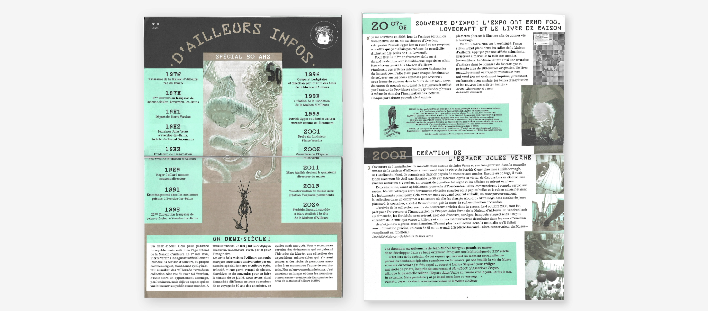
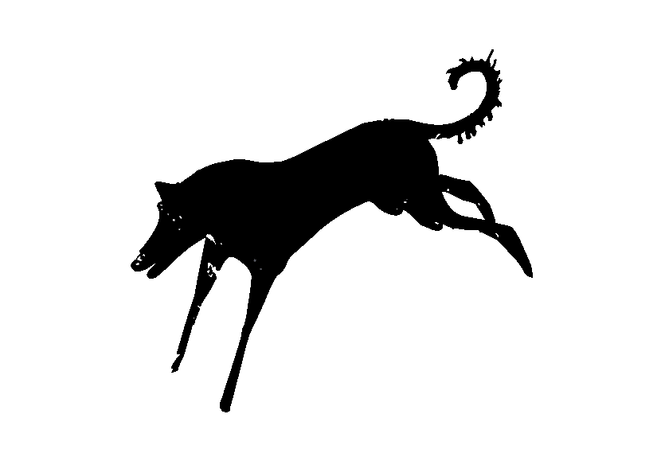

LAT. / BEWARE OF THE DOG.
GRAPHIC DESIGN & OTHER INSTINCTS
A little history.
A little mischief.
A lot of teeth.
We make identities, images and objects. Rooted in the past, restless in the present. Built with our hands as much as our heads.
FIG. A — THE WATCHDOG
AN OLD MOTIF, A NEW TEMPERAMENT.
FROM GARAGE LINOCUTS
TO CULTURAL IDENTITIES.
Rigorous systems. Dirty hands.
We like it somewhere in between.
Editorial, illustration and identities. Explore the work — and imagine what we could make together.

D’ailleurs Info — 50th year special
A / EDITORIAL / PRINT

B / POSTER DESIGN / ILLUSTRATION / TYPE
COMPETITION ENTRY / WHITEFRONTIER / PIQ PIQ

C / IDENTITY / ILLUSTRATION / PACKAGING
OPEN FILES. UNFINISHED THOUGHTS. ROOM FOR YOUR PROJECT.
Make something with us ↗
MULTIPLE DISCIPLINES
ONE COLLECTIVE
Serious about the work.
Not precious about
how we get there.
We are cave canem, a three-person multidisciplinary graphic design collective in Switzerland. Our practice moves between digital precision and handmade imperfection — from a linocut in a garage to a clean, unapologetic identity for a local museum. The medium changes. The curiosity stays.
01 / WHY WORK TOGETHER
Three minds. No relay race.
A small collective means a direct conversation with the people doing the work. Different disciplines, one shared table.
02 / WHY WORK TOGETHER
From ancient mosaics to everyday printed matter: we look for the logic behind a motif, then give it a different job.
03 / WHY WORK TOGETHER
An unruly first mark can become a rigorous visual system. We make room for both the expressive gesture and the useful detail.
Visual identities, custom lettering, guidelines, wayfinding
Books, publications, posters, printed matter
Web design, digital experiences, moving identities
Art direction, illustration, pattern, print experiments
IMPERFECT PERFECTION.
NOT A FILTER.
A WAY OF WORKING.

ANALOGUE INPUT → DIGITAL POSSIBILITIES
Collect references. Ask awkward questions. Look at the history, the context and the overlooked detail.
Cut, print, scan, code. Move between the screen and the workbench until something unexpected starts to make sense.
Give the instinct a system.
Test the idea in the real world. Refine what matters. Build a visual language that keeps its character as it grows.
The nitty-gritty is where the good stuff happens.
HEAD / HAND / REPEAT
A GOOD PLACE TO START
Something to get
our teeth into?
A cultural project, a new identity, an odd little idea. Tell us what you have in mind — it doesn’t need to be a perfect brief.
COLLABORATIONS
GOOD QUESTIONS
NEW PROJECTS / COLLABORATIONS / GOOD QUESTIONS
Tell us what you’re making, who it’s for and what is still open. A rough idea is enough.
01 / THE IDEA & CONTEXT
02 / THE FORMATS YOU HAVE IN MIND
03 / TIMING & BUDGET, IF YOU KNOW THEM
OPENS YOUR EMAIL APP — SEND US YOUR IDEA, BRIEF OR QUESTIONS.